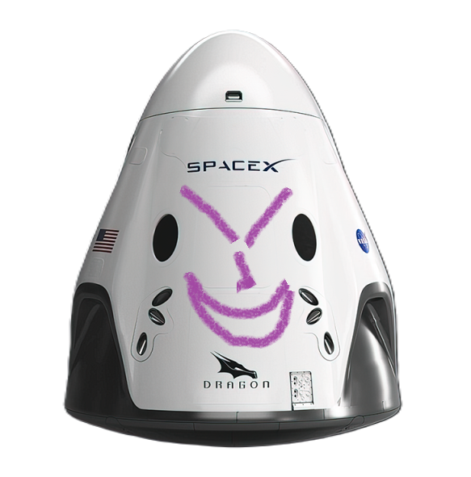

Hyperblog
Tu blog de cabecera
Este es el título atractivo e interesante del post
Y este es el párafo de inicio donde vamos a explicar las cosas increíbles que se pueden hacer con ramas

Los blogs son la mejor forma de compartir información y tus ideas. Mucho mas que ir a conferencias o salir en Youtube. Excepto si eres un rockstar. Pero estad√≠sticamente no lo eres.... por ahora.
Suscribete y dale like